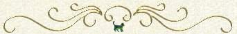

Will of
Margery Nichols
(died 1823)
Mason County, Kentucky

Mason County KY Will Book:
Margery Kirk Nichols,
In the name of God, Amen. I Margery Nicholls
being of sound disposing mind and memory do make
ordain and declare this my last Will and testament
as follows towit: First I desire that my executor
herein after mentioned shall pay and satisfy
all just demands which I may leave unsatisfied.
Secondly I will and bequeath unto my beloved nephew
George Kirk son of Thomas Kirk Junior and to his heirs
and assigns forever all and singular the tract of land
whereon I now live, also all the household and kitchen
furniture, which I may leave in the house and
kitchen or on the said farm, and my farther will is
that my executors herein after appointed shall pay
to my said nephew the sum of five hundred dollars.
[Page] 25
My farther will is that my said nephew shall have all my
stock of horses, cattle sheep and hogs, and all and every kind
of farming tools and utensils which I now have or may have
at the time of my death.
Item, I give and bequeath to my brother Thomas Kirk the
Sum of one hundred dollars to be paid him by my executors
as soon as they can conveniently collect the same.
Item I give and bequeath to my brother-in-law George
Plummer the sum of fifty dollars to be paid by my executors
so soon as they can collect the same.
Item, I will and bequeath to my Neice Mary Thomas wife
to William Thomas the sum of fifty dollars to be paid to
her by my executors.
Item. I will and bequeath to Isaiah Nicholls son to my
Nephew Thomas Nicholls the sum of fifty dollars to be paid
to his guardian by my executors, or in case he thinks proper to
secure it, so that it shall answer for a fund for schooling the
said Isaiah.
Item. My will and desire is, that all the residue of my
said estate, not herein bequeathed shall be equally divided
between all the children of my brother Thomas Kirk and
my sister Nancy Plummer deceased, except such cloathing
as I may leave, which I direct to be divided between my
sister-in-law Elizabeth Kirk, my neice Mary Thomas, Malinda Dollas and Sally Kendall, wife of Aaron Kendall.
Item, I appoint my friend Thomas Manhall Executor
to this my last Will and testament hereby revoking all
and every other will or wills heretofore made by me. In
testimony whereof, I have hereunto set my hand and seal
this third of September eighteen hundred and eleven.
Signed, sealed Published &
Pronounced as the last Will
& Testament in the presence of
Teste her
J.R. Bullock Margery X Nichols {Seal}
Manhall Key mark
Peyton R. Key
I Margery Nicholls being still of sound mind and
memory as make this codicil to my will as follows towit
It is my will and desire that my negro boy Armstead
be free after the year eighteen hundred and twenty four
and my executor is hereby directed and empowered to
sell the said boy for that term and no longer and to
give him the privilege of choosing his master if he
shall think proper.
My farther will is that my nephew George Kirk
shall receive but three hundred dollars instead of five
hundred mentioned in the body of my will. In testimony whereof I have hereto set my hand and seal the
nineteenth of September eighteen hundred and eleven.
Teste
Thomas Marshall Margery X Nichols {Seal}
J.R. Bullock
Mason County Kcty April Court 1823
This last Will and testament of Margery Nicholls
deceased was produced in Court and proved by the oath
of Peyton R. Key and Marshall Key, witnesses thereto and
ordered to be recorded. And it appearing to the satisfaction
of the Court that Thomas Marshall the executor named
in said Will has departed this life, on motion of George
Kirk, administration with the will annexed of the estate
of the said Margery Nicholls deceased is granted to the
Said George Kirk, whereupon he made oath &c and upon
his motion certificate is granted him for obtaining letters
of administration thereof in due form, upon his giving
Security, whereupon he together with Daniel Rees and
William Rankins his securities entered into and
acknowledged bond in the penalty of Six thousand
dollars conditioned as the law directs.
Attest
Manhall Key, Clk.
Transcribed by J.L. McKenzie. Words/comments in [brackets] were inserted by me for clarification. This Margery was the wife of Thomas Nichols who was the brother of my 6th great grandfather, John Nichols. Interestingly, in spite of Thomas's wishes, stated in his will, Margery wrote left her entire estate to her brother, her sister and their children, save for $50.00 to Isaiah Nichols, son of her husband's nephew, Thomas Nichols.
Return to the Family Documents Index
|